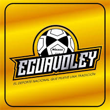
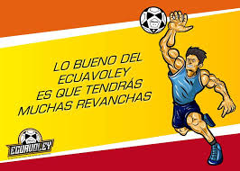
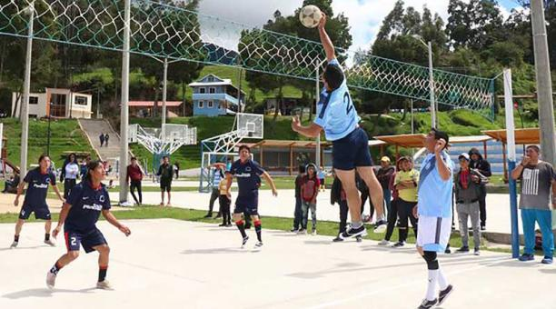

El Ecuavóley es una variante del voleibol originaria de Ecuador. Es muy popular entre la comunidad ecuatoriana expandida por el mundo la cual practica esta variante local. Se cree que antes de la llegada de los europeos ya se practicaba este deporte en la región. El primer torneo de Ecuavóley se celebró 1958. Desde ya hace un tiempo este deporte ecuatoriano ha ido tomando algunas variantes en las reglas de juego, es así como campeonatos a nivel nacional han adoptado nuevos reglamentos dentro de las políticas deportivas (la Historia real del Ecuavóley viene desde aproximadamente de 1918).
Historia Ecuavóley

El ecuavóley, también conocido como vóley criollo, es una modalidad del voleibol creado en Ecuador. Se baraja la posibilidad de que este deporte, o alguno parecido, se practicaba ya en el siglo XIX en Ecuador. Pero lo cierto es que su andadura oficial, aunque de forma amateur siempre practicado como deporte de barrio, comenzó a mediados del siglo XX en la ciudad de Quito. De hecho, fue en esta ciudad, junto con Cuenca, donde se desarrolló y creó definitivamente esta nueva modalidad deportiva del voleibol. Luego, la práctica del deporte se iría expandiendo por territorio ecuatoriano, gracias a las distintas migraciones, llegando a ser conocido en la totalidad de Ecuador. Al inicio, fue considerado como el deporte de los pobres y los taxistas, aunque, poco a poco, esto ha ido cambiando con la totalidad.
Crecimiento del deporte En el año 1944 y hasta 1957 se practica más en Quito algunas ligas barriales formadas por varios equipos de distintos barrios y parroquias de la capital del Ecuador. En 1957, tras trece años de la práctica del perro en Quito sin ningún tipo de orden, se decide fundar la Federación de Ligas Deportivas Barriales y Parroquiales del Cantón Quito, a fin de intentar crear una estructura y un orden para la práctica del deporte. Al año siguiente, en 1958, se inaugura el Campeonato de Campeones de perro , para intentar dar más cabida a una modalidad que todavía estaba en proceso de crecimiento y maduración. Dos años más tarde, en Quito, se empieza a organizar campeonatos de distintos deportes como el fútbol o el básquetbol. Aprovechando la ocasión, también se organizó uno de ecuavóley para intentar, con éxito, impulsar la práctica de un deporte con sello nacional. Estos campeonatos se organizaron y desarrollaron con éxito durante diez años, de 1960 a 1970.
Reglamento
• Cada equipo en pista está formado por tres jugadores: colocador (jugador delantero), volador (jugador posterior), servidor (jugador ayudante).
• La red es más alta y estrecha. Se coloca a una altura de 2,85, para sujetos de más de 1,90cm y estatura media a 2.75. Esta medida es la primogénita entre las canchas locales y tiene un ancho de unos 60 cm.
• El campo mantiene las mismas dimensiones de 18 m de largo por 9 m de ancho.
• Se juega con dos balones de fútbol Mikasa ft-5.
• Se permite mantener la pelota en la mano por menos de un segundo. (golpear y empujar el balón).
• No se permite tocar con la mano la red. No se puede pisar ni atravesar la línea ubicada debajo de la red.
• No se permite patear el balón. (punto al equipo contrario).
• Se debe cantar "bola" antes de batir. (realizar el saque).
• La batida se la realiza desde cualquier posición siempre y cuando los dos pies estén situados delante de la línea de servicio.
• Solo se puede batir con una mano o no es válido.
• El balón no puede tocar la red, punto para el equipo contrario.
